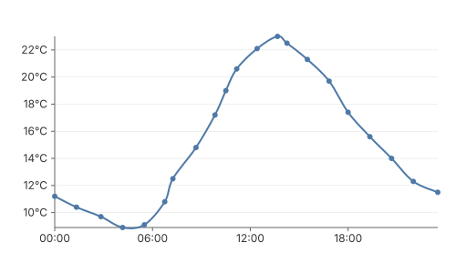
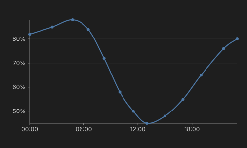

09 — Dashboard
Multiple charts on one page with different sizes, themes, and configurations. This shows how gogal charts compose — each is an independent SVG with its own scale, theme, and options.


The pattern
Each chart is created independently. Mix and match sizes, themes, and configurations — gogal produces self-contained SVGs that don't interfere with each other.
// Temperature — light theme, 500x300
tc := gogal.NewLineChart(
gogal.WithSize(500, 300),
gogal.WithGrid(true),
gogal.WithSmooth(true),
gogal.WithYFormat("%.0f°C"),
)
tc.Add("Temperature", temp)
tc.Render(w)
// Humidity — dark theme, 500x300
hc := gogal.NewLineChart(
gogal.WithSize(500, 300),
gogal.WithTheme(gogal.ThemeDark),
gogal.WithGrid(true),
gogal.WithSmooth(true),
gogal.WithYFormat("%.0f%%"),
)
hc.Add("Humidity", humidity)
hc.Render(w)
WithTheme(gogal.ThemeDark) switches to a dark background with light text and grid lines. The 10-colour data palette is shared between themes. You can also create custom themes by constructing a
Theme struct.
WithSize(w, h) sets the SVG viewBox. Use CSS
width/max-width on the container to control the rendered size — the SVG scales responsively.
Mixed chart types on one page
The dashboard also includes:
- A multi-series ordinal chart spanning the full width
- Sparklines for quick at-a-glance metrics
// Full-width multi-series with ordinal axis
all := gogal.NewLineChart(
gogal.WithSize(1060, 350),
gogal.WithAxisMode(gogal.Ordinal),
gogal.WithLegend(true),
)
all.Add("Temperature (°C)", temp)
all.Add("Humidity (%)", humidity)
all.Add("Pressure (hPa)", pressure)
// Compact sparklines
sp := gogal.NewLineChart(
gogal.WithVariant(gogal.Sparkline),
gogal.WithSize(150, 25),
gogal.WithSmooth(true),
)
sp.Add("Temp", temp)
Layout is your responsibility — gogal produces SVGs, you arrange them with HTML/CSS. Use CSS Grid, Flexbox, or tables. Each chart is a self-contained block element.
Running it
task example:09
Serves at http://localhost:1348.
API reference
| Function | Purpose |
|---|---|
WithTheme(gogal.ThemeDark) |
Dark background theme |
WithTheme(gogal.ThemeLight) |
Light theme (default) |
WithSize(w, h) |
SVG viewBox dimensions |
WithLegend(true) |
Force legend display |
gogal.ThemeDark / gogal.ThemeLight |
Built-in theme presets |